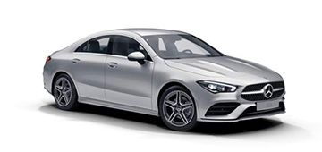

Mercedes-Benz Design: Sensual Purity and Modern Luxury.
Designers at Mercedes-Benz are reconciling tradition and modernity in designing the cars for the future. Their work centres on “Sensual Purity” as an expression of modern luxury. The new design idiom featuring reduced edges and creases – indentations and recesses in the sheet metal – aims to create clear forms and sensual surfaces which showcase high tech while also arousing emotions. Design creates something out of the ordinary and makes a major contribution to shaping the brand image. For Mercedes-Benz designers, good design has to be both beautiful and intelligent.
-

[A-Class] Uncompromisingly dynamic design.
The new A-Class is as youthful and dynamic as ever, but grown-up and comfortable like never before. It completely redefines modern luxury in the compact class, and revolutionises interior design. Technologically the new A-Class not only takes first place thanks to MBUX – Mercedes-Benz User Experience: it also offers a number of functions that were previously the preserve of the luxury class
-
[C-Class] Stylish makeover.
The most successful model series from Mercedes-Benz is entering its fifth year in production with extensive modifications. The design of the exterior and interior benefits from a stylish makeover. The electronic architecture is completely new and will make the user experience even more exciting. The new C-Class features the latest Mercedes-Benz driving assistance systems offering the driver cooperative support, and therefore provides a higher level of active safety than its predecessor. The new C-Class also contributes crucially to the electrification. As the first model, the C-Class benefits from the combination of a diesel engine and an externally chargeable hybrid system.
-

[CLA] Bonnet with powerdomes.
The design of the CLA underlines the coupé character with its stretched form and design elements such as the bonnet with powerdomes or the rear licence plate which has been moved down. As such it does justice to its predecessor’s status as a design icon. The CLA has the very latest driving assistance systems with cooperative driver support, and thus provides the highest level of active safety in this segment with functions adopted from the S‑Class. Another example of automotive intelligence and the transfer of technology from the luxury segment to the compact class are the optional MULTIBEAM LED headlamps.
-

[CLS] Pioneer of the new design idiom.
The new CLS pioneers the new design idiom of Mercedes-Benz, which is recognisable by its clear contours and reduced lines. Its character is marked by a grille contour that widens towards the base and a forward-slanting front section. Other features include wide, low-set headlamps and two-section tail lights. At the same time the design reflects the timeless aura of the first CLS, which founded a new segment and quickly became a design icon. Like its predecessors, the new CLS exudes self-assured sportiness in exemplary style: a highly emotive vehicle offering impressive long-distance and acoustic comfort coupled with thrilling, unrivalled technology.
-

[E-Class] Numerous technical innovations.
Mercedes-Benz takes a big step into the future with the new E‑Class. The tenth-generation business saloon delivers stylish highlights with its distinct, emotive design and high-grade interior. The new E-Class also marks the world premiere of numerous technical innovations. They enable comfortable, safe driving on a new level plus a new dimension in driver assistance – among other things. A generation of completely new four-, six-, and eight-cylinder engines is just one of many highlights of the new E-Class. The sum total of its innovations make the E-Class the most intelligent saloon in the business class.
-

[EQC] Electric now has a Mercedes.
With high tension we follow the development of the first fully electric vehicle under the new product and technology brand EQ.
In mid-2019 the time has now come: The EQC is the first Mercedes-Benz vehicle to be launched under the EQ brand. With its seamless, clear design and colour highlights typical of the brand, it is a pioneer for an avant-garde electric look while representing the design idiom of Progressive Luxury. With respect to quality, safety and comfort the EQC is the Mercedes-Benz among electric vehicles, and highly convincing in the sum of its attributes.
-

[S-Class] Embodiment of a modern luxury saloon.
The S-Class is the true embodiment of a modern luxury saloon: it is an exclusive first-class mobile office akin to a business jet and also an exquisite centre of well-being at the same time. With extensive innovations the undisputed leader in the premium segment now takes the next step. Among the highlights are the considerably improved driving assistance systems and an all-new and highly efficient engine range with a series of new technologies for electrification of the powertrain. The ENERGIZING comfort control is a world-first entering series production: this optional feature links various comfort systems in the vehicle together and allows customers to configure a specific wellness set-up to suit their mood or need.
-

[AMG] Hallmark AMG driving performance.
The GT is the second sports car developed entirely in-house by Mercedes-AMG. Its front mid-engine concept with transaxle and the intelligent aluminium lightweight construction form the basis for a highly dynamic driving experience. Its likewise newly developed AMG 4.0-litre V8 biturbo engine underscores the hallmark AMG driving performance. The new GT combines driving dynamics and first-class racetrack performance with superb everyday practicality, and efficiency that sets new standards in the segment. As another vehicle developed autonomously by Mercedes-AMG the new Mercedes-AMG GT 4-Door model delivers driving experiences in new dimensions and extends the AMG model family. The new coupé draws directly on the legendary SLS and AMG GT models of success.
-
[Mercedes-Maybach] Even more refined and more exclusive..
Mercedes-Maybach stands for the ultimate in exclusivity and individuality. The luxury brand combines the perfection of the Mercedes-Benz S-Class with the exclusivity of Maybach. Now the top model from Mercedes-Benz is even more refined. A new radiator grille, optional two-tone paintwork and new exclusive colour combinations in the interior ensure an even more majestic look. A reinterpretation of the Mercedes-Maybach radiator grille with its fine, vertical struts accentuates the front end. The double clear coat is available as a further new option for all dark colours. It creates a brilliant surface finish with a piano lacquer effect and a special impression of depth.